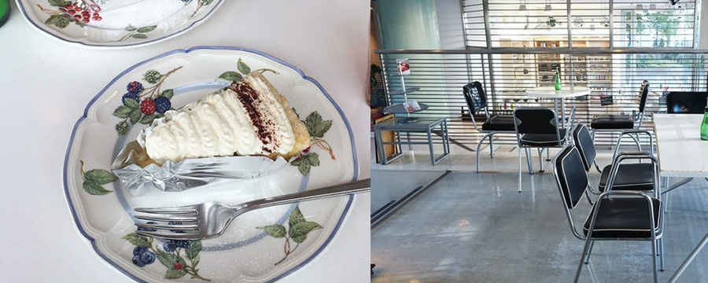

ジ・アッタテラス クラブタワーズ＠沖縄

那覇空港から車で１時間ほどの距離。 初めてジアッタテラスに来たときは、ここって楽園なの？天国なの？という錯覚に陥る。 プールと、空が繋がってただただ青い。 チェックイン後のティータイム時は、コーヒーや紅茶、お菓子が飲み食べ放題。 夕方になるとカクテルタイムとなり、ワイン、シャンパン、生ハムなどのおつまみも飲み食べ放題になる。 ホテル内は、完全に18歳以上でないと入れず、 ザ・大人の空間。ただただテンションが上がってしまう非日常感を味わえる。 夜のバーはラウンジテラスで、生ピアノ演奏の中、 沖縄の綺麗は星空を眺めながら美味しいカクテルを頂くことができる。 控えめに言ってただの幸せな時間を過ごせるので是非行って欲しい。